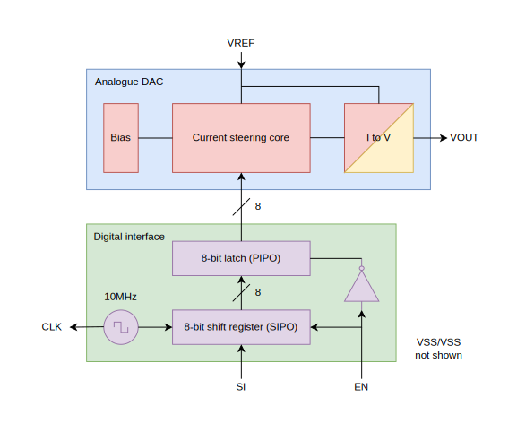
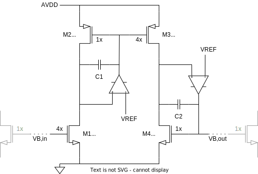
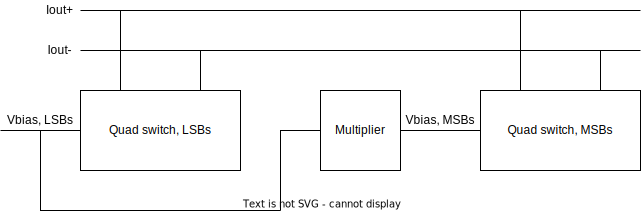

This project was the coursework of the Full-Custom Integrated Circuit Design module. The aim of the coursework is to design a digital-to-analogue converter (DAC) in GPDK 45nm CMOS. This project was individual.
Requirements on the DAC include a 1.1V supply voltage, a minimum of 8 bits, a 400kHz conversion rate, a 1us settling time, a maximum power consumption of 20mW, and a maximum silicon area of 0.5mm2. The output of the DAC must be within 4LSB of the ideal line drawn such that the minimum input code (0) gives 0.1V output and the maximum input code gives 1.0V output.
The top-level design must also include a digital interface which provides a 10MHz reference clock, and read the data to be converted as a serial input.
As shown above, the overall DAC was therefore divided into an analogue subsystem and a digital subsystem. A current steering architecture was chosen. The design of the digital subsystem was relatively simple, with a buffered ring oscillator providing the clock, and appropriate D-flip-flops forming the shift register and the latch. The design of the analogue subsystem is more involved.

The fundamental building blocks of the current steering core is a current steering cell (left). Here, a differential configuration is used such that the M1 always remains on. Four of those cells are then combined to form a quad switch (right). Note that to ensure less errors due to Vds mismatches, the switches are also scaled according, just like the current source transistor.
 To avoid using a large number of transistors, the design is segmented into two quad switches with different bias currents. The multiplier block (left) effectively multiplies the bias current by 16. Amplifiers are used to minimise Vds errors such that the multiplication ratio is accurate. Combining the blocks give the overall current steering core (right).
Since a voltage output is required, a transimpedance stage is needed. To save total area, a current-feedback opamp is used (left). In the overall transimpedance stage (right), the resistor value is tuned to give the correct slope for the output curve, whereas an additional current offset (128x LSB current) is used to provide the correct voltage offset.
The DNL/INL results, as well as the results of a transient simulation where the input code is increased at a rate of 400kHz are shown above.
The labelled layout is shown above. Standard cell were made, placed and routed for the digital interface. Interdigitation was used in the current steering core to improve transistor matching. Although the above layout passes DRC and LVS, more considerations could have been given to proper routing of power and ground, as well as addition of substrate contacts or decoupling capacitors in empty spaces.
Designing a DAC in a time span of less than two months in which many other things were going in parallel has not been an easy task, and I must say that I am not too satisfied with the final design overall, especially on the layout side, which was quite rushed. The coursework instructions also did not require crucial design and verification steps like corner simulations and post-layout extractions, something which is unthinkable in an industrial context. Nonetheless, this project was still a good exercise in analogue IC design, which allowed me to familiarised myself even more with the design methodologies and also the design tools.